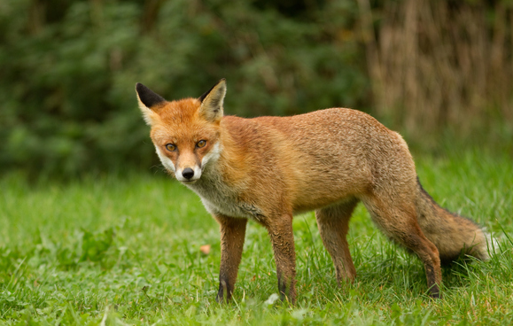
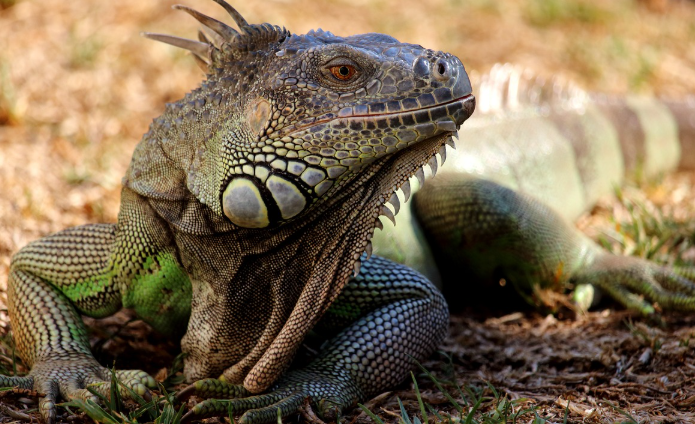

| ANIMALES | DESCRIPCIÓN | IMAGEN |
|---|---|---|
| ZORROS | Los vulpinos son una tribu de mamíferos carnívoros incluidos en la familia de los cánidos. Se conocen comúnmente como zorros o raposas. |
 |
| LEÓN | El león es un mamífero carnívoro de la familia de los félidos y una de las cinco especies del género Panthera. | |
| IGUANA | Las iguanas verdaderas son un género de saurópsidos escamosos iguánidos, endémicas de zonas tropicales de Norteamérica, Centroamérica, Sudamérica y el Caribe. |
 |
| ARDILLA | La ardilla es un pequeño mamífero roedor de la familia Sciuridae, caracterizado por su cola larga y peluda, agilidad para trepar árboles y una dieta omnívora (nueces, semillas, frutos, insectos). Existen más de 200 especies, incluyendo arborícolas, terrestres y voladoras, distribuidas casi globalmente. Son diurnas y almacenan comida. |
|
NUTRIA | Los lutrinos, conocidos comúnmente como nutrias, son una subfamilia de mamíferos placentarios carnívoros de la familia Mustelidae. Actualmente existen trece especies de nutrias repartidas en siete géneros, con una distribución de la población prácticamente mundial. |